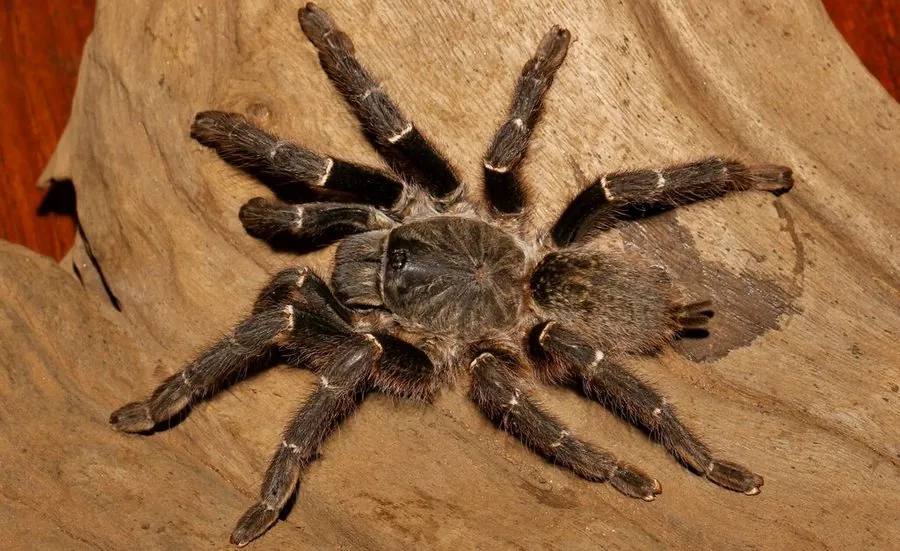

蛛形动物 · 动物界
橙巴布捕鸟蛛 Pterinochilus murinus

原产非洲东部的捕鸟蛛，体色橙黄，性情凶猛、行动迅速，受惊时会站立并弹射蛰毛，是饲养者公认的“暴脾气”种类。
- 分类
- 门节肢动物门纲蛛形纲目蜘蛛目科捕鸟蛛科属巴布捕鸟蛛属
- 栖息环境
- 稀树草原、灌丛和半干旱地带，在石块下或树根间挖洞
- 地理分布
- 非洲东部，包括坦桑尼亚、肯尼亚和乌干达
- 保护级别
- IUCN 暂无评估；非中国原产，在中国无保护级别
物种志
橙巴布捕鸟蛛成年足展 12–15 cm，体色以橙黄、棕橙为主，腹部有深色斑纹，足上密生刚毛；雌蛛比雄蛛粗壮，寿命也更长。它行动迅速，受到威胁时会举起前足站立，并摩擦腹部弹射蛰毛。
它原产于非洲东部，包括坦桑尼亚、肯尼亚和乌干达，栖息于稀树草原、灌丛和半干旱地带，常在地面石块下或树根间挖洞结网，夜间捕食昆虫、小型蜥蜴和蛙类。橙巴布捕鸟蛛性情凶猛、咬合力强，毒性虽不致命，但被咬后疼痛明显，蛰毛也会引起皮肤红肿，饲养和接触时需谨慎。它结的网常覆盖洞口周围。雌蛛可活 15 年左右，雄蛛成熟后寿命较短。它是异宠市场上受欢迎的捕鸟蛛；目前 IUCN 暂无评估。
形态与习性
- 食性昆虫、小型蜥蜴和蛙类
- 足展12–15 cm
- 识别体色橙黄，腹部有深色斑纹
- 寿命雌蛛约 15 年，雄蛛成熟后较短
- 习性地栖，挖洞结网，夜间捕猎
- 防御举足站立并弹射蛰毛，被咬后疼痛明显
趣味知识
- 橙巴布捕鸟蛛受惊时会高高举起前足站立，摆出威吓姿势。
- 它跑得很快，饲养者常称它为“橙色闪电”。
- 它的蛰毛容易飘散，接触皮肤会引起明显红肿和瘙痒。